Section A (one-mark MCQ)
Liver is an organ that maintains constant levels of different substances in the blood. Levels of one such substance entering the liver during three types of body activities (I – III) are shown.
Quesito 1
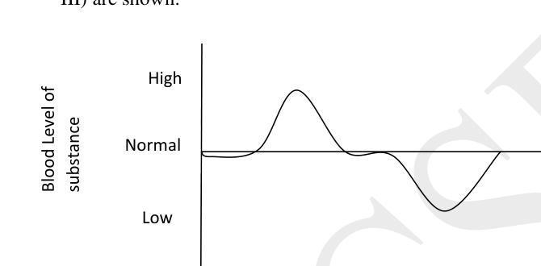
The substance and three activities I – III respectively must be:
| Substance | Activity I | Activity II | Activity III | |
|---|---|---|---|---|
| (A) | Glucose | Exercise | Resting | Sleep |
| (B) | CO₂ | Exercise | Sleep | After meals |
| (C) | Glucose | After meals | Resting | Exercise |
| (D) | O₂ | Exercise | Sleep | Resting |
Topic: Biology Metodi: Experimental Data Analysis Competenze: Diagrammatic Reasoning Objects: — Fonte: Testo (PDF) — p.3 Soluzione: Soluzioni (PDF)
**Sezione A (MCQ di un marchio) **
Il fegato è un organo che mantiene livelli costanti di diverse sostanze nel sangue. Sono indicati i livelli di una di queste sostanze che entra nel fegato durante tre tipi di attività corporee (I III).
Quesito 1
La sostanza e le tre attività I III devono essere rispettivamente:
| Substance | Activity I | Activity II | Activity III | |
|---|---|---|---|---|
| (A) Glucosio Esercizio Riposo Sonno |
# B # CO2 # # Esercizio # # Dorme dopo il pasto
(C) Glucosio Dopo il pasto Esercizio di riposo ♬ D ♬ O2 ♬ Esercizio ♬ Sonno ♬ Riposo ♬
Topic: Biology Metodi: Experimental Data Analysis Competenze: Diagrammatic Reasoning Objects: — Fonte: Testo (PDF) — p.3 Soluzione: Soluzioni (PDF)
Maintaining a proper internal fluid environment is essential for any organism. Marine invertebrates whose body fluids are isotonic to sea water can face several problems when exposed to brackish water of estuaries or fresh water of lakes and rivers. Variation of internal osmotic concentration with external osmotic concentration in three marine invertebrates is shown in the graph.
Quesito 2
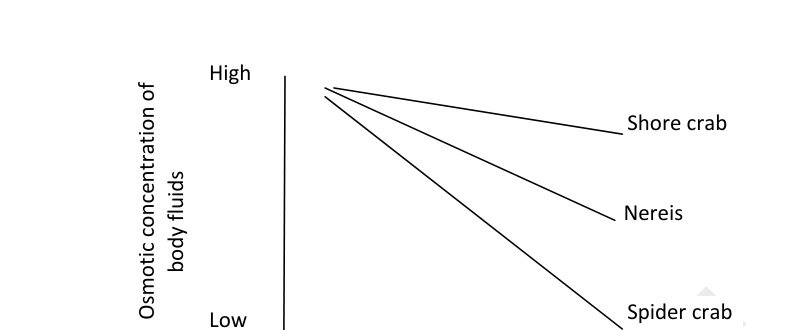
Choose the correct statement.
- (A) Nereis shows a better osmoregulatory capacity than shore crab.
- (B) Spider crab shows the most effective regulation of osmotic concentration of body fluids among the three invertebrates.
- (C) When in low salt conditions, body fluid of shore crab is hypertonic compared to surrounding medium.
- (D) In order to survive in low salt conditions, spider crab has to take in salts from surrounding water.
Topic: Biology Metodi: Experimental Data Analysis Competenze: Diagrammatic Reasoning Objects: — Fonte: Testo (PDF) — p.3 Soluzione: Soluzioni (PDF)
Il mantenimento di un ambiente fluido interno adeguato è essenziale per qualsiasi organismo. Gli invertebrati marini i cui fluidi corporei sono isotonici all’acqua marina possono affrontare diversi problemi quando sono esposti all’acqua salata degli estuari o all’acqua dolce dei laghi e dei fiumi. La variazione della concentrazione osmotica interna con la concentrazione osmotica esterna in tre invertebrati marini è mostrata nel grafico.
Quesito 2
Scegli la frase corretta.
- (A) Nereis mostra una migliore capacità di osmoregolazione rispetto al granchio di terra.
- (B) Il granchio arachnosa mostra la regolazione più efficace della concentrazione osmotica dei fluidi corporei tra i tre invertebrati.
- (C) In condizioni di basso contenuto di sale, il liquido corporeo del granchio di terra è ipertonico rispetto al medio circostante.
- (D) Per sopravvivere in condizioni di basso contenuto di sale, il granchio arachidico deve assorbire sali dall’acqua circostante.
Topic: Biology Metodi: Experimental Data Analysis Competenze: Diagrammatic Reasoning Objects: — Fonte: Testo (PDF) — p.3 Soluzione: Soluzioni (PDF)
A newly hatched chick grows to fully adult male or female in about 18 weeks’ time. During this time, different body parts show characteristic growth pattern. In an experiment, a pair of goggles were fixed on the eyes of a chick immediately after hatching such that only red wavelength of light passes through them. When the goggles are removed at the end of 7 days, the chick develops a peculiar eye defect. Given that longer wavelengths of light focus most posteriorly in the eye, the most likely defect that the chick has developed is:
- (A) Myopia
- (B) Hypermetropia
- (C) Astigmatism
- (D) Colour blindness
Topic: Biology Metodi: Physical Modeling Competenze: Physical Reasoning Objects: — Fonte: Testo (PDF) — p.4 Soluzione: Soluzioni (PDF)
Un pollo appena uscito cresce fino a diventare un maschio o una femmina completamente adulti in circa 18 settimane. Durante questo periodo, le diverse parti del corpo mostrano un modello di crescita caratteristico. In un esperimento, un paio di occhiali sono stati fissati sugli occhi di un pollo subito dopo l’uccisione in modo tale che solo una lunghezza d’onda rossa di luce passa attraverso di loro. Quando le occhiali vengono rimosse dopo 7 giorni, il pollo sviluppa un peculiare difetto oculare. Dato che le lunghezze d’onda più lunghe della luce si concentrano più in seguito nell’occhio, il difetto più probabile che il pollo abbia sviluppato è:
- (A) Miopia
- B) Ipermetropia
- (C) Astigmatismo
- (D) Ccecità di colore
Topic: Biology Metodi: Physical Modeling Competenze: Physical Reasoning Objects: — Fonte: Testo (PDF) — p.4 Soluzione: Soluzioni (PDF)
During extensive activity, there is accumulation of lactic acid in muscles. This could lead to cramps and fatigue. Training of any athletic activity helps body remove lactate from the muscles and shuttle it to other non-muscular parts. Lactate levels of 4 swimmers during recovery period are shown. Which of these represents the best quality of clearance?
Quesito 4
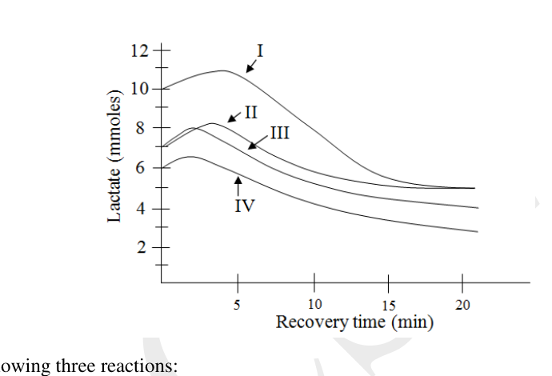
- (A) I
- (B) II
- (C) III
- (D) IV
Topic: Biology Metodi: Experimental Data Analysis Competenze: Diagrammatic Reasoning Objects: — Fonte: Testo (PDF) — p.5 Soluzione: Soluzioni (PDF)
Durante un’attività estesa si accumula acido lattico nei muscoli. Questo potrebbe portare a crampi e stanchezza. L’allenamento di qualsiasi attività atletica aiuta il corpo a rimuovere il lattato dai muscoli e a trasmetterlo ad altre parti non muscolari. Sono stati mostrati livelli di latto di 4 nuotatori durante il periodo di recupero. Quale di queste rappresenta la migliore qualità di autorizzazione?
Quesito 4
- (A) I
- (B) II
- C) III
- (D) IV
Topic: Biology Metodi: Experimental Data Analysis Competenze: Diagrammatic Reasoning Objects: — Fonte: Testo (PDF) — p.5 Soluzione: Soluzioni (PDF)
Study the following three reactions:
(i)
(ii)
(iii)
Which reaction/s represent/s autotrophic nutrition?
- (A) (iii) only
- (B) (i) and (iii) only
- (C) (ii) and (iii) only
- (D) (i), (ii) and (iii)
Topic: Biology Metodi: Physical Modeling Competenze: Physical Reasoning Objects: — Fonte: Testo (PDF) — p.5 Soluzione: Soluzioni (PDF)
Studiare le seguenti tre reazioni:
(i)
(ii)
(iii)
Quali reazioni rappresentano nutrizioni autotrofe?
- A) solo iii)
- B) Solo i) e iii)
- C) solo le lettere ii) e iii)
- D) i), ii) e iii)
Topic: Biology Metodi: Physical Modeling Competenze: Physical Reasoning Objects: — Fonte: Testo (PDF) — p.5 Soluzione: Soluzioni (PDF)
The oxygen consumption for four animals is tabulated below.
| Animal | Oxygen consumption per kg body mass per hour (Litre ) |
|---|---|
| I | 0.68 |
| II | 0.21 |
| III | 1.65 |
| IV | 0.07 |
Animals I – IV most likely could be respectively:
- (A) Elephant, Cat, Human and Mouse
- (B) Cat, Mouse, Elephant and Human
- (C) Human, Cat, Elephant and Mouse
- (D) Cat, Human, Mouse and Elephant
Topic: Biology Metodi: Experimental Data Analysis Competenze: Experimental Data Analysis Objects: — Fonte: Testo (PDF) — p.5 Soluzione: Soluzioni (PDF)
Il consumo di ossigeno per quattro animali è riportato in tabella.
| Animal | Oxygen consumption per kg body mass per hour (Litre ) |
|---|---|
| I | 0.68 |
| II | 0.21 |
Il terzo # # è # 1,65
| IV | 0.07 |
Gli animali I IV più probabilmente potrebbero essere rispettivamente:
- (A) Elefante, gatto, umano e topo
- (B) Gatti, topi, elefanti e umani
- (C) Uomo, gatto, elefante e topo
- (D) Gatto, umano, topo e elefante
Topic: Biology Metodi: Experimental Data Analysis Competenze: Experimental Data Analysis Objects: — Fonte: Testo (PDF) — p.5 Soluzione: Soluzioni (PDF)
It was 3.30 in the afternoon when Ajay reached the cinema hall after 20 minutes walk from his house. He entered the cinema hall in a hurry. It took him a few moments to see the surroundings clearly. What changes must have occurred in his eyes during this period?
Quesito 7
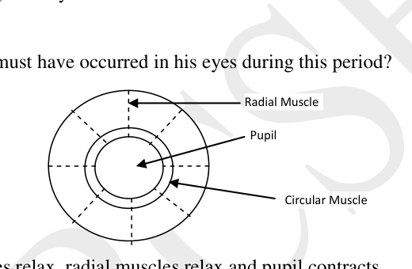
- (A) Circular muscles relax, radial muscles relax and pupil contracts.
- (B) Circular muscles relax, radial muscles contract and pupil dilates.
- (C) Circular muscles contract, radial muscle contract and pupil dilates.
- (D) Circular muscle contract, radial muscles relax and pupil contracts.
Topic: Biology Metodi: Physical Modeling Competenze: Physical Reasoning Objects: — Fonte: Testo (PDF) — p.6 Soluzione: Soluzioni (PDF)
Erano le 3.30 del pomeriggio quando Ajay arrivò al cinema dopo 20 minuti a piedi da casa sua. Entrò in sala del cinema in fretta. Ci vollero alcuni momenti per vedere chiaramente l’ambiente circostante. Quali cambiamenti avrebbero dovuto verificarsi nei suoi occhi durante questo periodo?
Quesito 7
- (A) I muscoli circolari si rilassano, i muscoli radiali si rilassano e le pupille si contraggono.
- (B) I muscoli circolari si rilassano, i muscoli radiali si contraggono e la pupilla si dilata.
- (C) Contrasto dei muscoli circolari, contrazione del muscolo radial e dilatazione delle pupille.
- (D) Contrasto muscolare circolare, rilassamento dei muscoli radiali e contrazioni pupili.
Topic: Biology Metodi: Physical Modeling Competenze: Physical Reasoning Objects: — Fonte: Testo (PDF) — p.6 Soluzione: Soluzioni (PDF)
In case of kidney failure, dialysis is recommended using artificial kidneys. An artificial kidney contains numerous semipermeable tubes suspended in a dialyzing fluid. The dialyzing fluid is iso-osmotic to blood. These semi-permeable tubes are similar to the nephrons, the structural and functional units of kidney. While the artificial kidney simulates a normal kidney, which of the following processes does not occur in an artificial kidney?
- (A) Reabsorption of water
- (B) Filtration of urea
- (C) Retaining of plasma salts and clotting factors in the blood
- (D) Retaining of platelets in the blood
Topic: Biology Metodi: Physical Modeling Competenze: Physical Reasoning Objects: — Fonte: Testo (PDF) — p.6 Soluzione: Soluzioni (PDF)
In caso di insufficienza renale, si raccomanda dialisi con reni artificiali. Un rene artificiale contiene numerosi tubi semipermebili sospesi in un liquido dialisizzante. Il liquido di dialisi è isoosmotico al sangue. Questi tubi semipermebili sono simili ai nefroni, le unità strutturali e funzionali del rene. Mentre il rene artificiale simula un rene normale, quale dei seguenti processi non si verifica in un rene artificiale?
- A) Riassorbimento dell’acqua
- (B) Filtrazione dell’urea
- (C) Ritenuta di sali plasmatici e fattori di coagulazione nel sangue
- (D) Retezione di piastrine nel sangue
Topic: Biology Metodi: Physical Modeling Competenze: Physical Reasoning Objects: — Fonte: Testo (PDF) — p.6 Soluzione: Soluzioni (PDF)
A researcher centrifuged human blood at low speed to separate the red blood cells (RBCs) and white blood cells (WBCs). She then suspended the pellet of RBCs in saline (0.9% NaCl). She subsequently put a drop of the RBC suspension into three different solutions as indicated below. What will be her observations for solutions I, II and III respectively?
| Solution I | Solution II | Solution III |
|---|---|---|
| Detergent | Distilled water | 5% NaCl |
- (A) Lysis, lysis, swelling.
- (B) Swelling, no change, shrinkage.
- (C) Lysis, lysis, shrinkage.
- (D) No change, shrinkage, swelling.
Topic: Biology Metodi: Physical Modeling Competenze: Physical Reasoning Objects: — Fonte: Testo (PDF) — p.7 Soluzione: Soluzioni (PDF)
Un ricercatore ha centrifugato il sangue umano a bassa velocità per separare i globuli rossi (RBC) e i globuli bianchi (WBC). Ha quindi sospeso la pellettina di RBC in soluzione salina (0,9% NaCl). In seguito ha messo una goccia della sospensione RBC in tre soluzioni diverse come indicato di seguito. Quali saranno le sue osservazioni per le soluzioni I, II e III rispettivamente?
♬ Soluzione I ♬ Soluzione II ♬ Soluzione III ♬ |---|---|---| ♬ Detergente ♬ Acqua distillata ♬ 5% NaCl ♬
- Lisi, liesi, gonfiore.
- (B) gonfiore, nessun cambiamento, contrazione.
- Lisi, liesi, restringimento.
- Nessun cambiamento, contrazione, gonfiore.
Topic: Biology Metodi: Physical Modeling Competenze: Physical Reasoning Objects: — Fonte: Testo (PDF) — p.7 Soluzione: Soluzioni (PDF)
The thyroid gland secretes thyroxine (T4) and triiodothyronine (T3), together known as thyroid hormone. The secretion of thyroid hormone is regulated by thyrotropin-releasing hormone (TRH) and thyroid-stimulating hormone (TSH) as schematically represented.
Quesito 10
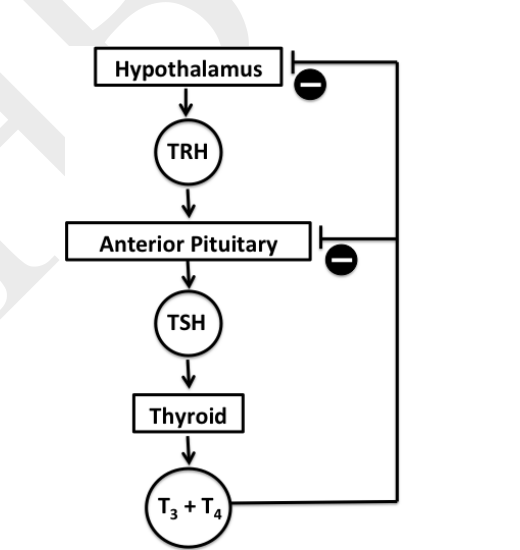
One of the actions of thyroid hormone is to increase the basal metabolic rate (BMR) of a person. A person who has suddenly gained weight and has a swollen neck goes to a doctor. The person also feels tired and mentally dull. Clinical analysis shows that the person has low levels of T4. The doctor feels that either the pituitary or the thyroid is non-functional. In order to identify the impaired organ the person is given TSH stimulation. Which one of the following observations and the conclusions made is correct?
- (A) If there is no change in the T4 levels, it indicates problem of the pituitary.
- (B) If it leads to increase in the T4 levels, it indicates problem of the pituitary.
- (C) If it leads to increase in the T4 levels, it indicates problem of the thyroid.
- (D) If it leads to further decrease in the T4 levels, it indicates problem of the thyroid.
Topic: Biology Metodi: Physical Modeling Competenze: Diagrammatic Reasoning Objects: — Fonte: Testo (PDF) — p.7 Soluzione: Soluzioni (PDF)
La ghiandola tiroidea secre la tiroxina (T4) e la triiodotironina (T3), insieme conosciute come ormone tiroideo. La secrezione di ormone tiroideo è regolata da ormone rilasciante di tirotropiene (TRH) e ormone stimolante della tiroide (TSH) come rappresentato schematicamente.
Quesito 10
Una delle azioni dell’ormone tiroideo è quella di aumentare il tasso di metabolismo basale (BMR) di una persona. Una persona che improvvisamente ha ingrossato e ha un collo gonfio va dal medico. La persona si sente anche stanca e mentalmente stanca. L’analisi clinica mostra che la persona ha bassi livelli di T4. Il medico ritiene che l’ipofusce o la tiroide non funzionino. Per identificare l’ organo alterato, la persona riceve una stimolazione TSH. Quali delle seguenti osservazioni e conclusioni sono corrette?
- (A) Se non vi è alcun cambiamento nei livelli di T4, indica un problema dell’ipofisi.
- (B) Se porta ad un aumento dei livelli di T4, indica un problema dell’ipofisi.
- (C) Se porta ad un aumento dei livelli di T4, indica un problema della tiroide.
- (D) Se porta ad un ulteriore calo dei livelli di T4, indica un problema della tiroide.
Topic: Biology Metodi: Physical Modeling Competenze: Diagrammatic Reasoning Objects: — Fonte: Testo (PDF) — p.7 Soluzione: Soluzioni (PDF)
Consider a hypothetical situation where the mass of neutron in argon is made half and the mass of electron in argon is doubled with respect to their actual masses. In this case, the atomic mass of will approximately
- (A) remain the same
- (B) become half
- (C) increase by 45%
- (D) reduce by 27%
Topic: Nuclear & Particle Physics Metodi: Physical Modeling Competenze: Physical Reasoning Objects: Atom, Nucleus Fonte: Testo (PDF) — p.8 Soluzione: Soluzioni (PDF)
Considerate una situazione ipotetica in cui la massa dei neutroni nell’argon è dimezzata e la massa degli elettroni nell’argon è raddoppiata rispetto alle loro masse effettive. In questo caso, la massa atomica di sarà di circa
- (A) restano le stesse
- (B) diventare metà
- (C) aumento del 45%
- (D) ridurre del 27%
Topic: Nuclear & Particle Physics Metodi: Physical Modeling Competenze: Physical Reasoning Objects: Atom, Nucleus Fonte: Testo (PDF) — p.8 Soluzione: Soluzioni (PDF)
One spoon of a sample of common salt weighs approximately 0.5 g. It contains 40% sodium and 380 micrograms of iodine. Assuming that the sample contains only sodium, iodide and chloride ions, the number of chloride ions present in one spoon of this sample is closest to
- (A)
- (B)
- (C)
- (D)
Topic: Chemistry Metodi: Order-of-Magnitude Estimation Competenze: Estimation & Approximation Objects: — Fonte: Testo (PDF) — p.8 Soluzione: Soluzioni (PDF)
Un cucchiaino di campione di sale comune pesa circa 0,5 g. Contiene il 40% di sodio e 380 microgrammi di iodio. Supponendo che il campione contenga solo ioni di sodio, ioduro e cloruro, il numero di ioni di cloruro presenti in un cucchiaino di questo campione è più vicino a
- (A)
- (B)
- (C)
- (D)
Topic: Chemistry Metodi: Order-of-Magnitude Estimation Competenze: Estimation & Approximation Objects: — Fonte: Testo (PDF) — p.8 Soluzione: Soluzioni (PDF)
An LPG gas cylinder regularly used in the household contains a mixture of butane and propane. If 5 litres of this mixture on complete combustion produces 17 litres of at atmospheric pressure and 25 °C, then the ratio of butane to propane in the mixture is (Assume that both the gases in the cylinder are in vapour phase.)
- (A) 3:2
- (B) 2:3
- (C) 4:1
- (D) 1:4
Topic: Organic Chemistry Metodi: Ideal Gas Law Competenze: Physical Reasoning Objects: Gas, Container Fonte: Testo (PDF) — p.8 Soluzione: Soluzioni (PDF)
Un cilindro di gas a gas naturale a LPG regolarmente utilizzato nella casa contiene una miscela di butano e propano. Se 5 litri di questa miscela a combustione completa producono 17 litri di a pressione atmosferica e 25 °C, allora il rapporto tra butano e propano nella miscela è (si presume che entrambi i gas nel cilindro siano in fase di vapore.)
- (A) 3:2
- (B) 2:3
- (C) 4:1
- (D) 1:4
Topic: Organic Chemistry Metodi: Ideal Gas Law Competenze: Physical Reasoning Objects: Gas, Container Fonte: Testo (PDF) — p.8 Soluzione: Soluzioni (PDF)
In a chemistry laboratory, a student found a bottle labeled ‘Acid’. As it was a solid, she was curious to find out what it is. She weighed 0.42 g of this and made a solution of it and titrated it with 0.17 M NaOH solution. The volume of NaOH required to obtain the end point was 33.8 mL. If the molecular formula of the acid is , find out the number of protons per acid molecule that take part in the reaction and the amount of acid required to neutralize 1 mole of the alkali.
- (A) 1 proton and 73 g
- (B) 2 protons and 146 g
- (C) 1 proton and 46 g
- (D) 2 protons and 73 g
Topic: Chemistry Metodi: Physical Modeling Competenze: Physical Reasoning Objects: — Fonte: Testo (PDF) — p.8 Soluzione: Soluzioni (PDF)
In un laboratorio di chimica, uno studente ha trovato una bottiglia etichettata “Acido”. Poiché era solido, era curiosa di scoprire cosa fosse. Ha pesato 0,42 g di questo e ne ha fatto una soluzione e l’ha titrato con 0,17 M di soluzione di NaOH. Il volume di NaOH necessario per ottenere il punto finale è stato di 33,8 ml. Se la formula molecolare dell’acido è , scopri il numero di protoni per molecola acida che partecipano alla reazione e la quantità di acido necessaria per neutralizzare 1 mole di alcalino.
- (A) 1 protone e 73 g
- (B) 2 protoni e 146 g
- (C) 1 protone e 46 g
- 2 protoni e 73 g
Topic: Chemistry Metodi: Physical Modeling Competenze: Physical Reasoning Objects: — Fonte: Testo (PDF) — p.8 Soluzione: Soluzioni (PDF)
The graph that indicates the relation between the variables and for an ideal gas at a constant temperature is:
- (A) vs : rectangular hyperbola ( decreasing as increases)
- (B) vs : rising then falling curve
- (C) vs : straight line through origin (increasing)
- (D) vs : parabola opening upward
Topic: Thermodynamics Metodi: Ideal Gas Law Competenze: Diagrammatic Reasoning Objects: Gas Fonte: Testo (PDF) — p.9 Soluzione: Soluzioni (PDF)
Il grafico che indica la relazione tra le variabili e per un gas ideale a temperatura costante è:
- (A) vs : iperbola rettangolare ( diminuendo con l’ aumento di )
- (B) vs : curva di rialzo e di declino
- (C) vs : linea retta attraverso l’origine (aumentando)
- (D) vs : parabola che si apre verso l’alto
Topic: Thermodynamics Metodi: Ideal Gas Law Competenze: Diagrammatic Reasoning Objects: Gas Fonte: Testo (PDF) — p.9 Soluzione: Soluzioni (PDF)
The position of some metals in the electrochemical series in decreasing electropositive character is . In a chemical factory, a worker by accident used a copper rod to stir a solution of aluminum nitrate; he was scared that now there would be some reaction in the solution, so he hurriedly removed the rod from the solution and observed that
- (A) the rod was coated with Al.
- (B) an alloy of Cu and Al was being formed.
- (C) the solution turned blue in colour.
- (D) there was no reaction.
Topic: Chemistry Metodi: Physical Modeling Competenze: Physical Reasoning Objects: Rod Fonte: Testo (PDF) — p.9 Soluzione: Soluzioni (PDF)
La posizione di alcuni metalli nella serie elettrochimica in carattere elettroposittivo in diminuzione è . In una fabbrica chimica, un lavoratore ha accidentalmente usato una canna di rame per mescolare una soluzione di nitrato di alluminio; temeva che ora ci sarebbe stata una reazione nella soluzione, quindi ha rimosso rapidamente la canna dalla soluzione e ha osservato che
- (A) la canna era rivestita di Al.
- (B) si stava formando una lega di Cu e Al.
- (C) la soluzione si è trasformata in blu.
- Non c’è stata reazione.
Topic: Chemistry Metodi: Physical Modeling Competenze: Physical Reasoning Objects: Rod Fonte: Testo (PDF) — p.9 Soluzione: Soluzioni (PDF)
A white compound P was dissolved in water and electricity was passed through it resulting in the formation of a gas Q. This gas was then passed through a slurry of another white compound R. The product obtained from this reaction is commonly used as a germicide. P, Q and R respectively, are
- (A) NaCl, ,
- (B) , ,
- (C) , ,
- (D) , ,
Topic: Chemistry Metodi: Physical Modeling Competenze: Physical Reasoning Objects: — Fonte: Testo (PDF) — p.10 Soluzione: Soluzioni (PDF)
Un composto bianco P si dissolve nell’acqua e l’elettricità viene trasmessa attraverso il quale si forma un gas Q. Questo gas è stato poi trasmesso attraverso un’altra spuglia di un altro composto bianco R. Il prodotto ottenuto da questa reazione è comunemente usato come germicida. P, Q e R rispettivamente, sono
- (A) NaCl, ,
- (B) , ,
- (C) , ,
- (D) , ,
Topic: Chemistry Metodi: Physical Modeling Competenze: Physical Reasoning Objects: — Fonte: Testo (PDF) — p.10 Soluzione: Soluzioni (PDF)
Iron present in spinach can be estimated by titrating it with potassium permanganate. Small amounts of spinach leaves are weighed and dissolved in acid to extract the iron in solution. The solution is then titrated and the following reaction takes place during this titration:
When properly balanced with the simplest set of whole number coefficients, the sum of the coefficients in the balanced equation is
- (A) 16
- (B) 18
- (C) 22
- (D) 24
Topic: Chemistry Metodi: Physical Modeling Competenze: Physical Reasoning Objects: — Fonte: Testo (PDF) — p.10 Soluzione: Soluzioni (PDF)
Il ferro presente negli spinaci può essere stimato titolatandolo con permanganato di potassio. Piccole quantità di foglie di spinaci vengono pesate e dissolte in acido per estrarre il ferro nella soluzione. La soluzione viene quindi titrata e durante questa titratazione avviene la seguente reazione:
Quando corretamente bilanciato con l’insieme più semplice di coefficienti di numero intero, la somma dei coefficienti nell’equazione bilanciata è
- (A) 16
- (B) 18
- (C) 22
- (D) 24
Topic: Chemistry Metodi: Physical Modeling Competenze: Physical Reasoning Objects: — Fonte: Testo (PDF) — p.10 Soluzione: Soluzioni (PDF)
A disproportionation reaction occurs with a simultaneous oxidation and reduction of the same species in the reaction. Which of the following is NOT a disproportionation reaction?
- (A)
- (B)
- (C)
- (D)
Topic: Chemistry Metodi: Physical Modeling Competenze: Physical Reasoning Objects: — Fonte: Testo (PDF) — p.10 Soluzione: Soluzioni (PDF)
Una reazione di disproporzione si verifica con un’ossidazione e una riduzione simultanee della stessa specie nella reazione. Qual è una reazione di disproporzione?
- (A)
- (B)
- (C)
- (D)
Topic: Chemistry Metodi: Physical Modeling Competenze: Physical Reasoning Objects: — Fonte: Testo (PDF) — p.10 Soluzione: Soluzioni (PDF)
Some metals impart very bright colours such as red, pink, yellow to the flame when heated. The cause of this phenomenon is the excitation of electrons in the outermost electronic shell. The electronic configuration in the outermost shell of these metals is represented as
- (A)
- (B)
- (C)
- (D)
Topic: Chemistry Metodi: Physical Modeling Competenze: Physical Reasoning Objects: — Fonte: Testo (PDF) — p.10 Soluzione: Soluzioni (PDF)
Alcuni metalli, quando riscaldati, conferiscono colori molto brillanti come rosso, rosa, giallo alla fiamma. La causa di questo fenomeno è l’eccitazione degli elettroni nella conchiglia elettronica più esterna. La configurazione elettronica nella conchiglia più esterna di questi metalli è rappresentata come
- (A)
- (B)
- (C)
- (D)
Topic: Chemistry Metodi: Physical Modeling Competenze: Physical Reasoning Objects: — Fonte: Testo (PDF) — p.10 Soluzione: Soluzioni (PDF)
A particle is travelling with uniform acceleration of magnitude . During successive time intervals , and its average velocities are , and respectively. Then
- (A)
- (B)
- (C)
- (D)
Topic: Newtonian Mechanics Metodi: Kinematic Equations Competenze: Physical Reasoning Objects: — Fonte: Testo (PDF) — p.11 Soluzione: Soluzioni (PDF)
Una particella si sta spostando con un’accelerazione uniforme di magnitudo . Durante intervalli di tempo successivi , e le sue velocità medie sono rispettivamente , e . Allora…
- (A)
- (B)
- (C)
- (D)
Topic: Newtonian Mechanics Metodi: Kinematic Equations Competenze: Physical Reasoning Objects: — Fonte: Testo (PDF) — p.11 Soluzione: Soluzioni (PDF)
A river is flowing at 4 km/hr from west to east. Two swimmers P and Q can both swim at 2 km/hr in still water. The minimum time in which it is possible for the swimmers to cross the river is . Both of them start swimming from the same point O on the bank of the river in different directions as shown. The point X is directly across from the point O.
Quesito 22
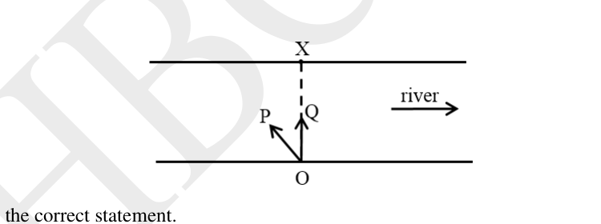
Choose the correct statement.
- (A) P will reach the point X in time .
- (B) Q will reach the point X in time .
- (C) P will reach a point somewhere east of X in time .
- (D) Q will reach a point somewhere east of X in time .
Topic: Newtonian Mechanics Metodi: Vector Decomposition Competenze: Physical Reasoning Objects: — Fonte: Testo (PDF) — p.11 Soluzione: Soluzioni (PDF)
Un fiume scorre a 4 km/h da ovest a est. Due nuotatori P e Q possono entrambi nuotare a 2 km/h in acqua ferma. Il tempo minimo in cui è possibile attraversare il fiume per i nuotatori è . Entrambi iniziano a nuotare dallo stesso punto O sulla riva del fiume in direzioni diverse come mostrato. Il punto X è direttamente di fronte al punto O.
Quesito 22
Scegli la frase corretta.
- (A) P raggiungerà il punto X nel tempo .
- (B) Q raggiungerà il punto X nel tempo .
- (C) P raggiungerà un punto da qualche parte ad est di X nel tempo .
- (D) Q raggiungerà un punto da qualche parte a est di X nel tempo .
Topic: Newtonian Mechanics Metodi: Vector Decomposition Competenze: Physical Reasoning Objects: — Fonte: Testo (PDF) — p.11 Soluzione: Soluzioni (PDF)
A stone of mass falls from a height on soft muddy ground and sinks to a depth of . Assume that the mud exerts a constant resistive force of magnitude . Neglecting air resistance, is
- (A)
- (B)
- (C)
- (D)
Topic: Conservation of Energy Metodi: Conservation of Energy Competenze: Physical Reasoning Objects: — Fonte: Testo (PDF) — p.11 Soluzione: Soluzioni (PDF)
Una pietra di massa cade da un’altezza su terreno fangoso morbido e affonda a una profondità . Supponiamo che il fango eserciti una forza di resistenza costante di magnitudo . Negliore della resistenza all’aria, è
- (A)
- (B)
- (C)
- (D)
Topic: Conservation of Energy Metodi: Conservation of Energy Competenze: Physical Reasoning Objects: — Fonte: Testo (PDF) — p.11 Soluzione: Soluzioni (PDF)
A wire of length and resistance has uniform cross section. A potential difference of 10 volt is applied across the wire as shown. A cell of emf (< 10 volt) and of internal resistance is connected through a galvanometer between points A and C. The point C, at a distance from A, is chosen such that the galvanometer reads zero. The length depends on
Quesito 24
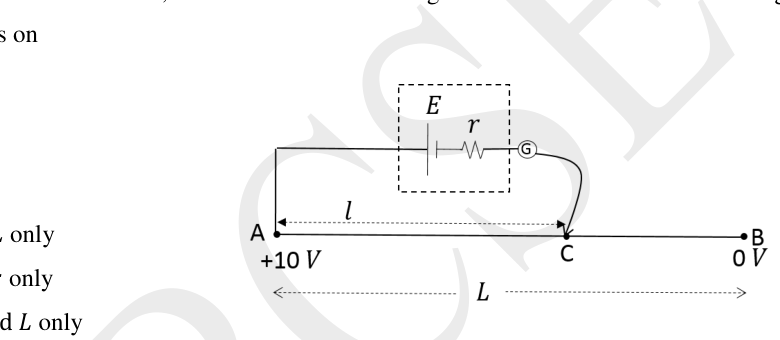
- (A) only
- (B) and only
- (C) and only
- (D) , and only
Topic: Circuits Metodi: Kirchhoff’s Laws Competenze: Physical Reasoning Objects: Wire, Galvanometer, Battery, Resistor Fonte: Testo (PDF) — p.11 Soluzione: Soluzioni (PDF)
Un filo di lunghezza e resistenza ha una sezione trasversale uniforme. Si applica una differenza potenziale di 10 volt sul filo come mostrato. Una cella di emf (< 10 volt) e di resistenza interna è collegata attraverso un galvanometro tra i punti A e C. Il punto C, a una distanza da A, è scelto in modo tale che il galvanometro sia di valore zero. La lunghezza dipende da
Quesito 24
- (A) Solo
- (B) Solo e
- (C) Solo e
- (D) Solo , e
Topic: Circuits Metodi: Kirchhoff’s Laws Competenze: Physical Reasoning Objects: Wire, Galvanometer, Battery, Resistor Fonte: Testo (PDF) — p.11 Soluzione: Soluzioni (PDF)
A concave mirror of focal length and diameter () is kept horizontally and filled with water. Rays of light parallel to the mirror axis are incident on it. After reflection, the rays will focus close to
- (A)
- (B)
- (C)
- (D)
Topic: Geometric Optics Metodi: Thin Lens & Mirror Equation Competenze: Physical Reasoning Objects: Mirror Fonte: Testo (PDF) — p.11 Soluzione: Soluzioni (PDF)
Un specchio concavo di lunghezza focale e di diametro () è tenuto orizzontale e riempito di acqua. Raggi di luce paralleli all’asse dello specchio sono incidenti su di esso. Dopo la riflessione, i raggi si concentreranno vicino a
- (A)
- (B)
- (C)
- (D)
Topic: Geometric Optics Metodi: Thin Lens & Mirror Equation Competenze: Physical Reasoning Objects: Mirror Fonte: Testo (PDF) — p.11 Soluzione: Soluzioni (PDF)
Two mirrors OA and OB make an angle of 50° with each other. An object C is placed on the angular bisector of angle AOB.
\begin{document}
\begin{tikzpicture}[scale=1.2]
\coordinate (O) at (0,0);
\coordinate (A) at (4,0);
\coordinate (B) at ({4*cos(50)},{4*sin(50)});
\draw[thick] (O) -- (A) node[right]{A};
\draw[thick] (O) -- (B) node[above right]{B};
\node[below left] at (O) {O};
\draw[->] (1,0.18) arc (0:50:1);
\node at ({1.3*cos(25)},{1.3*sin(25)}) {$50^\circ$};
\coordinate (C) at ({2.6*cos(25)},{2.6*sin(25)});
\fill (C) circle (2pt) node[above right]{C};
\end{tikzpicture}
\end{document}The total number of images of the object formed by the mirrors will be:
- (A) 5
- (B) 6
- (C) 7
- (D) 8
Topic: Geometric Optics Metodi: Ray Tracing Competenze: Diagrammatic Reasoning Objects: Mirror Fonte: Testo (PDF) — p.11 Soluzione: Soluzioni (PDF)
Due specchi OA e OB si formano un angolo di 50° tra loro. Un oggetto C è posizionato sul bisettore angolare dell’angolo AOB.
\begin{document}
\begin{tikzpicture}[scale=1.2]
\coordinate (O) at (0,0);
\coordinate (A) at (4,0);
\coordinate (B) at ({4*cos(50)},{4*sin(50)});
\draw[thick] (O) -- (A) node[right]{A};
\draw[thick] (O) -- (B) node[above right]{B};
\node[below left] at (O) {O};
\draw[->] (1,0.18) arc (0:50:1);
\node at ({1.3*cos(25)},{1.3*sin(25)}) {$50^\circ$};
\coordinate (C) at ({2.6*cos(25)},{2.6*sin(25)});
\fill (C) circle (2pt) node[above right]{C};
\end{tikzpicture}
\end{document}Il numero totale di immagini dell’oggetto formato dagli specchi sarà:
- (A) 5
- (B) 6
- (C) 7
- (D) 8
Topic: Geometric Optics Metodi: Ray Tracing Competenze: Diagrammatic Reasoning Objects: Mirror Fonte: Testo (PDF) — p.11 Soluzione: Soluzioni (PDF)
A 420.0 W heater is used to raise the temperature of water flowing through a tube of length 2.4 m by 5.0 °C. Assuming that the efficiency of heating is 50%, the flow rate of water (in litre/minute) is
- (A) 0.3
- (B) 0.6
- (C) 1.2
- (D) 1.8
Topic: Thermodynamics Metodi: Conservation of Energy Competenze: Physical Reasoning Objects: Tube Fonte: Testo (PDF) — p.12 Soluzione: Soluzioni (PDF)
Un riscaldatore da 420,0 W viene utilizzato per aumentare di 5.0 °C la temperatura dell’acqua che scorre attraverso un tubo di lunghezza 2,4 m. Se l’efficienza del riscaldamento è del 50%, il flusso di acqua (in litri/minuto) è
- (A) 0.3
- (B) 0.6
- (C) 1.2
- (D) 1.8
Topic: Thermodynamics Metodi: Conservation of Energy Competenze: Physical Reasoning Objects: Tube Fonte: Testo (PDF) — p.12 Soluzione: Soluzioni (PDF)
Consider two arrangements of identical resistors, one in parallel and the other in series. Each of these arrangements are connected to batteries of the same voltage. The ratio of power dissipated in the parallel arrangement to the series arrangement is
- (A)
- (B)
- (C)
- (D)
Topic: Circuits Metodi: Equivalent Circuit Reduction Competenze: Physical Reasoning Objects: Resistor, Battery Fonte: Testo (PDF) — p.12 Soluzione: Soluzioni (PDF)
Si consideriamo due arrangiamenti di resistori identici, uno in parallelo e l’altro in serie. Ciascuno di questi dispositivi è collegato a batterie della stessa tensione. Il rapporto di potenza dissipata nell’arrangimento parallelo con l’arrangimento di serie è
- (A)
- (B)
- (C)
- (D)
Topic: Circuits Metodi: Equivalent Circuit Reduction Competenze: Physical Reasoning Objects: Resistor, Battery Fonte: Testo (PDF) — p.12 Soluzione: Soluzioni (PDF)
White light from a distant extended source is incident on a convex lens. Its image is seen on a screen kept at the focal plane of the lens. The top half of the lens is covered with a green filter and bottom half with a red filter. Choose the correct statement.
- (A) The top half of the image will be green and the bottom half will be red.
- (B) The top half of the image will be red and bottom half will be green.
- (C) The image will be white.
- (D) The image will be yellow.
Topic: Geometric Optics Metodi: Ray Tracing Competenze: Physical Reasoning Objects: Lens, Screen Fonte: Testo (PDF) — p.12 Soluzione: Soluzioni (PDF)
La luce bianca proveniente da una fonte estesa lontana è incidente su una lente convexa. La sua immagine è visibile su uno schermo tenuto al piano focale della lente. La metà superiore dell’obiettivo è coperta da un filtro verde e la metà inferiore da un filtro rosso. Scegli la frase corretta.
- (A) La metà superiore dell’immagine sarà verde e la metà inferiore sarà rossa.
- (B) La metà superiore dell’immagine sarà rossa e la metà inferiore verdeggiata.
- (C) L’immagine sarà bianca.
- L’immagine sarà gialla.
Topic: Geometric Optics Metodi: Ray Tracing Competenze: Physical Reasoning Objects: Lens, Screen Fonte: Testo (PDF) — p.12 Soluzione: Soluzioni (PDF)
In Rutherford’s experiment the correct plot for the number () of alpha particles scattered against scattering angle is:
Quesito 30
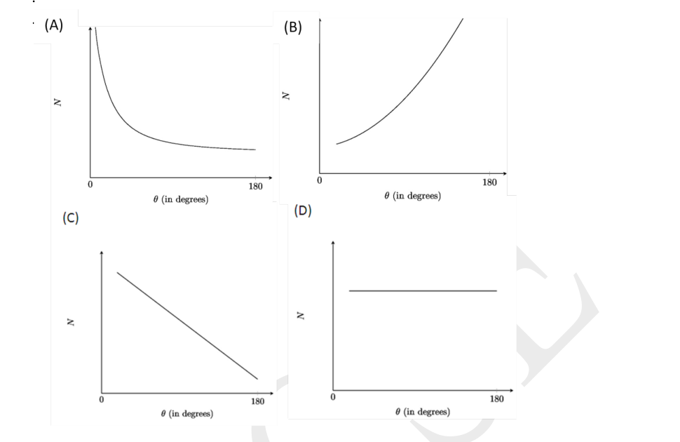
- (A) Graph A
- (B) Graph B
- (C) Graph C
- (D) Graph D
Topic: Nuclear & Particle Physics Metodi: Physical Modeling Competenze: Diagrammatic Reasoning Objects: Nucleus, Particle Beam Fonte: Testo (PDF) — p.12 Soluzione: Soluzioni (PDF)
Nell’esperimento di Rutherford, la grafica corretta per il numero () di particelle alfa sparsi contro l’angolo di dispersione è:
Quesito 30
- (A) Grafico A
- (B) Grafico B
- (C) Grafico C
- (D) Grafico D
Topic: Nuclear & Particle Physics Metodi: Physical Modeling Competenze: Diagrammatic Reasoning Objects: Nucleus, Particle Beam Fonte: Testo (PDF) — p.12 Soluzione: Soluzioni (PDF)
Section B (analytical) [9 MARKS]
In an experiment, a student exposed seedlings of a plant species to two different light conditions:
i. Full sun ii. Shade (50% of full sun).
Assume that all the remaining conditions are same for both the groups. Plants from both the groups were collected at the end of 6 weeks and various parameters were measured. The mean value for each parameter is given in the table.
| Parameter | Sun | Shade |
|---|---|---|
| Leaf area (cm²) | 42 | 24 |
| Leaf weight (g) | 0.126 | 0.061 |
| Stem weight (g) | 0.283 | 0.138 |
| Root weight (g) | 0.239 | 0.089 |
| Total weight (g) | 0.648 | 0.288 |
A student made the following hypotheses:
Hypothesis 1: Plants grown in sun will show more shoot growth than root growth as compared to plants grown in shade.
(A) Which of the following ratios can help to test hypothesis 1? [1.5 MARKS]
a. Leaf weight / root weight b. Leaf area / leaf weight c. (Leaf weight + stem weight) / root weight d. Stem weight / root weight
(B) Calculate the values of the ratios for sun and shade plants based on the option selected in (A).
(i) Value of the ratio obtained for plants in the sun: ________ [1.5 MARKS] (ii) Value of the ratio obtained for plants in shade condition: ________ [1.5 MARKS]
(C) Put a cross (X) against the correct statement. [1.5 MARKS]
(i) The values obtained in (B) support Hypothesis 1: ________ (ii) The values obtained in (B) do not support Hypothesis 1: ________
Hypothesis 2: Leaves produced by plants in shade condition will be thicker than those produced in sunny conditions. [1.5 MARKS]
(D) Which of the following ratios can help to test hypothesis 2?
a. Leaf weight / leaf area b. Leaf area / shoot weight c. Leaf weight / total plant weight d. Shoot weight / total plant weight
(E) In another experiment the growth of plants was studied under two conditions (under sufficient light in both): [1.5 MARKS]
(I) Condition X: water is supplied in sufficient quantity required for normal growth. (II) Condition Y: 50% of the required quantity of water is supplied.
What would be the expected results?
a. Increase in leaf weight to stem weight ratio in Y as compared to X. b. Decrease in leaf thickness in Y as compared to X. c. Decrease in shoot weight to root weight ratio in Y as compared to X. d. Increase in leaf weight to stem weight ratio in X as compared to Y.
Topic: Biology Metodi: Experimental Data Analysis Competenze: Experimental Data Analysis Objects: — Fonte: Testo (PDF) — p.15 Soluzione: Soluzioni (PDF)
Sezione B (analisi) [9 MARCHE]
In un esperimento, uno studente ha esposto i piantine di una specie vegetale a due diverse condizioni di luce:
i. Sole piena ii. Ombra (50% del sole pieno).
Supponiamo che tutte le condizioni restanti siano le stesse per entrambi i gruppi. Le piante di entrambi i gruppi sono state raccolte alla fine di 6 settimane e sono stati misurati vari parametri. Il valore medio di ciascun parametro è indicato nella tabella.
Parametro Sole Ombra |---|---|---| ♬ Area di foglia (cm2) ♬ 42 ♬ 24 ♬ ♬ Peso di foglia ♬ 0.126 ♬ 0.061 ♬
Il peso della stella # # 0.283 # 0.138
♬ Peso radicale ♬ 0.239 ♬ 0.089 ♬ ➡️Il peso totale ➡️G ➡️0.648 ➡️0.288 ➡️
Uno studente ha formulato le seguenti ipotesi:
IMPORTANZA 1: Le piante coltivate al sole mostrano una crescita più elevata rispetto alla crescita delle radici rispetto alle piante coltivate all’ombra.
(A) Quali dei seguenti rapporti possono aiutare a testare l’ipotesi 1? [1,5 MARC]
a. Peso delle foglie / peso della radice b. Area delle foglie / peso delle foglie c. (Peso di foglia + peso della trame) / peso della radice d. Peso del tronco / peso della radice
B) Calcolare i valori dei rapporti per le piante a sole e ombra in base all’opzione selezionata a)
(i) Valore del rapporto ottenuto per le piante al sole: ii) Valore del rapporto ottenuto per le piante in condizioni di ombra:
(C) Metti una croce (X) contro la dichiarazione corretta. [1,5 MARC]
i) I valori ottenuti in (B) supportano l’ ipotesi 1: ii) I valori ottenuti a) non supportano l’ ipotesi 1:
I fogli prodotti dalle piante in condizioni ombrose saranno più spessi di quelli prodotti in condizioni soleggiate. [1,5 MARC]
(D) Quale dei seguenti rapporti può aiutare a testare l’ipotesi 2?
a. Peso delle foglie / area delle foglie b. Area delle foglie / peso di colpo c. Peso delle foglie / peso totale delle piante d. Peso di colpo / peso totale della pianta
(E) In un altro esperimento la crescita delle piante è stata studiata in due condizioni (sotto sufficiente luce in entrambe): [1.5 MARCHE]
I) Condizione X: l’acqua è fornita in quantità sufficienti necessarie per una crescita normale. (II) Condizione Y: viene fornito il 50% della quantità di acqua richiesta.
Quali sarebbero i risultati attesi?
a. Aumento del peso delle foglie rispetto al peso del tronco in Y rispetto a X. b. Diminuzione dello spessore delle foglie in Y rispetto a X. c. Diminuzione del peso di colpo rispetto al peso della radice di Y rispetto a X. d. Aumento del peso delle foglie rispetto al peso del tronco in X rispetto a Y.
Topic: Biology Metodi: Experimental Data Analysis Competenze: Experimental Data Analysis Objects: — Fonte: Testo (PDF) — p.15 Soluzione: Soluzioni (PDF)
[12 MARKS]
Rajesh went to a doctor to check his blood glucose level. Doctor used a reagent which is colourless and turns pink in presence of glucose. More the concentration of glucose, greater the intensity of color. This color intensity can be quantitated using an instrument ‘colorimeter’. Following table gives colorimeter readings for four standard glucose concentrations.
| mg% | Reading |
|---|---|
| 20 | 0.15 |
| 40 | 0.29 |
| 80 | 0.61 |
| 120 | 0.91 |
Note that all colorimeter reading values above 0.05 are considered positive.
Rajesh’s blood sample showed a reading 0.75. A standard graph of OD values against the concentration of glucose is given.
Quesito 32
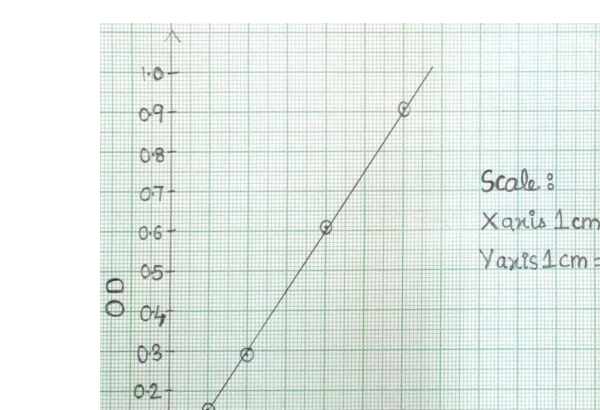
(A) What is the molar concentration of glucose in Rajesh’s blood? Show extrapolation in the graph and calculations in the box. [3 MARKS]
Doctor then gave Rajesh 100 g glucose to eat and tested his urine and blood samples at the intervals of 30, 60, 90 and 120 min. The readings in the colorimeter were as follows:
| Min | Reading for blood sample | Reading for urine sample |
|---|---|---|
| 30 | 0.55 | 0.03 |
| 60 | 0.75 | 0.15 |
| 90 | 1.0 | 0.25 |
| 120 | 1.2 | 0.35 |
(B) Plot graphs of glucose concentration in blood and urine against time in the given graph paper in the answer sheet. [3 MARKS]
(C) What is the concentration of glucose (in mg%) in the blood reaching nephron at 80 min? [2 MARKS]
(D) What is the concentration of glucose above which the kidneys start removing it in urine? [4 MARKS]
Topic: Biology Metodi: Graph Linearization, Experimental Data Analysis Competenze: Graph Linearization Objects: — Fonte: Testo (PDF) — p.16 Soluzione: Soluzioni (PDF)
- Non è vero.
Rajesh è andato da un dottore per controllare il suo livello di glucosio nel sangue. Il medico ha usato un reagente incolore che si trasforma in rosa in presenza di glucosio. Più il glucosio è concentrato, maggiore è l’intensità del colore. Questa intensità del colore può essere quantificata con uno strumento “colorimetro”. La tabella seguente fornisce le letture del colorimetro per quattro concentrazioni standard di glucosio.
♬ mg% ♬ Leggere ♬ |---|---| | 20 | 0.15 | | 40 | 0.29 | | 80 | 0.61 | | 120 | 0.91 |
Si noti che tutti i valori di lettura del colorimetro superiori a 0,05 sono considerati positivi.
Il campione di sangue di Rajesh ha mostrato una lettura di 0,75. Si presenta un grafico standard dei valori di OD rispetto alla concentrazione di glucosio.
Quesito 32
(A) Qual è la concentrazione molare di glucosio nel sangue di Rajesh? Mostra l’estrapolazione nel grafico e i calcoli nella casella. - Non è vero.
Il medico poi diede a Rajesh 100 g di glucosio da mangiare e testò i suoi campioni di urina e sangue a intervalli di 30, 60, 90 e 120 minuti. Le letture del colorimetro erano le seguenti:
♬ Min ♬ Leggere per campione di sangue ♬ Leggere per campione di urina ♬ |---|---|---| | 30 | 0.55 | 0.03 | | 60 | 0.75 | 0.15 | | 90 | 1.0 | 0.25 | | 120 | 1.2 | 0.35 |
(B) Grafici di grafica della concentrazione di glucosio nel sangue e nelle urine rispetto al tempo nella carta grafica data nella scheda di risposta. - Non è vero.
(C) Qual è la concentrazione di glucosio (in mg%) nel sangue che raggiunge il nefrone a 80 minuti? [2 MARCHE]
(D) Qual è la concentrazione di glucosio al di sopra della quale i reni iniziano a rimuoverla nelle urine? 4 MARCHE
Topic: Biology Metodi: Graph Linearization, Experimental Data Analysis Competenze: Graph Linearization Objects: — Fonte: Testo (PDF) — p.16 Soluzione: Soluzioni (PDF)
[9 MARKS]
Consider a self-sustaining ecosystem consisting of three components X, Y and Z set up in a laboratory for several weeks. During a 26-day observation period, it was disturbed by human intervention on a particular day. The population size of the three components during this period is tabulated below.
| Day | Component X | Component Y | Component Z |
|---|---|---|---|
| 1 | 10 | 40 | 200 |
| 4 | 11 | 42 | 220 |
| 7 | 15 | 54 | 210 |
| 10 | 14 | 53 | 190 |
| 13 | 14 | 43 | 220 |
| 17 | 0 | 120 | 100 |
| 20 | 0 | 130 | 30 |
| 23 | 0 | 30 | 30 |
| 26 | 0 | 15 | 150 |
(A) Assign the correct component alphabet to each of the following: [1.5 MARKS each]
i. Primary producer _____ ii. Herbivore _____ iii. Carnivore _____
(B) The average biomass of a producer is 0.0060 g and that of a herbivore is 0.0025 g. Using the population sizes on day 1, calculate the transfer of energy in the form of biomass (in %) from producers to herbivores occurring in the ecosystem. [3 MARKS]
(C) Indicate the day and the most likely activity that has disturbed the balance of the ecosystem. [0.5 + 1 MARKS]
Day: ____ Activity: ____
Options for activity: a) Removal of component X. b) Addition of component Y. c) Partial removal of component Z.
Topic: Biology Metodi: Experimental Data Analysis Competenze: Experimental Data Analysis Objects: — Fonte: Testo (PDF) — p.18 Soluzione: Soluzioni (PDF)
[9 MARCHE]
Considera un ecosistema autosufficiente composto da tre componenti X, Y e Z, installato in un laboratorio per diverse settimane. Durante un periodo di osservazione di 26 giorni, è stato disturbato dall’intervento umano in un determinato giorno. Le dimensioni della popolazione dei tre componenti durante questo periodo sono riportate in tabella.
∙ Day Component X Component Y Component Z ∙ |---|---|---|---| | 1 | 10 | 40 | 200 | | 4 | 11 | 42 | 220 | | 7 | 15 | 54 | 210 | | 10 | 14 | 53 | 190 | | 13 | 14 | 43 | 220 | | 17 | 0 | 120 | 100 | | 20 | 0 | 130 | 30 | | 23 | 0 | 30 | 30 | | 26 | 0 | 15 | 150 |
(A) Assegna l’alfabeto corretto a ciascuno dei seguenti componenti: [1.5 MARCHE ciascuno]
i. Produttore primario _____ ii. Erbivora _____ iii. Carnivoro _____
B) La biomassa media di un produttore è di 0,0060 g e di un erbivoro di 0,0025 g. Sfruttando le dimensioni della popolazione al giorno 1, calcolare il trasferimento di energia sotto forma di biomassa (in %) dai produttori agli erbivori presenti nell’ecosistema. - Non è vero.
C) Indicare il giorno e l’attività che ha disturbato l’equilibrio dell’ecosistema. [0,5 + 1 MARCHE]
Giorno: ____ Attività: ____
Opzioni di attività: a) Rimozione della componente X. b) Aggiunta della componente Y. c) Rimozione parziale della componente Z.
Topic: Biology Metodi: Experimental Data Analysis Competenze: Experimental Data Analysis Objects: — Fonte: Testo (PDF) — p.18 Soluzione: Soluzioni (PDF)
[13.5 MARKS]
Acid rain is a term referring to rain having a pH lower than that of natural rain. Historic monuments built with various materials such as iron coated with layers of and can get damaged by acid rain. Acid rain can lead to flaking of this coat. One such sample of coating was brought to the lab to be analysed. The weight of sample was 0.626 g.
The analyst added the sample to aqueous oxalic acid and completely precipitated the calcium as calcium oxalate (). The calcium oxalate precipitate obtained was then dissolved in sulphuric acid and the resulting oxalic acid () formed was titrated with a standard solution. The titration of the oxalic acid required 17.8 mL of 0.1 M solution.
(A) Balance the equation for the titration reaction between and . (Only entirely correct answer will be given marks.) [3.5 MARKS]
(B) Identify the oxidizing agent and the reducing agent in the reaction. [1.5 MARKS each]
(i) _________ is an oxidising agent. (ii) _________ is a reducing agent.
(C) Calculate the number of moles of oxalic acid reacted with the . [3 MARKS]
(D) Calculate the mass (in g) of in the original sample. [2 MARKS]
(E) Find the percent (%) of present in the original sample. [2 MARKS]
Topic: Chemistry Metodi: Physical Modeling Competenze: Physical Reasoning Objects: — Fonte: Testo (PDF) — p.19 Soluzione: Soluzioni (PDF)
[13,5 MARCHE]
La pioggia acida è un termine che si riferisce alla pioggia con un pH inferiore a quello della pioggia naturale. Monumenti storici costruiti con materiali diversi come il ferro rivestito di strati di e possono essere danneggiati dalla pioggia acida. La pioggia acida può portare alla discarica di questo cappotto. Un campione di questo tipo di rivestimento è stato portato in laboratorio per essere analizzato. Il peso del campione è stato di 0,626 g.
L’ analista ha aggiunto il campione all’ acido ossalico acquoso e ha completamente precipitato il calcio come ossalo di calcio (). Il precipitato di ossalo di calcio ottenuto è stato quindi dissolto in acido solforico e l’acido ossalico () formato è stato titolato con una soluzione standard . Per la titolazione dell’ acido ossalico è stato necessario 17,8 ml di soluzione di 0,1 M .
(A) Equilibrare l’equazione per la reazione di titolazione tra e . (Solo la risposta completamente corretta riceverà i segni.)
(B) Identificare l’agente ossidante e l’agente riduttore nella reazione. [1.5 MARCHE ciascuna]
(i) _________ è un agente ossidante. (ii) _________ è un agente riduttore.
(C) Calcolare il numero di mole di acido ossalico reagito con il . - Non è vero.
D) Calcolare la massa (in g) di nel campione originale. [2 MARCHE]
(E) Trova la percentuale (%) di presente nel campione originale. [2 MARCHE]
Topic: Chemistry Metodi: Physical Modeling Competenze: Physical Reasoning Objects: — Fonte: Testo (PDF) — p.19 Soluzione: Soluzioni (PDF)
[6 MARKS]
The following acid-base reaction is performed in a thermos flask:
The temperature of 90 g of water rises from 29 °C to 30.5 °C when 0.010 mole of is reacted with 0.010 mole of .
Calculate: [4 MARKS]
(A) The heat absorbed by the water. [2 MARKS]
(B) Heat evolved during the reaction of 17 g with 1 g . [2 MARKS]
Topic: Thermodynamics Metodi: Conservation of Energy Competenze: Physical Reasoning Objects: Calorimeter Fonte: Testo (PDF) — p.20 Soluzione: Soluzioni (PDF)
[6 MARCHE]
La seguente reazione acido-base viene eseguita in un collaio termico:
La temperatura di 90 g di acqua sale da 29 °C a 30.5 °C quando 0,010 mol di viene ripreso con 0,010 mol di .
Calcolo: [4 MARCHE]
A) Il calore assorbito dall’acqua. [2 MARCHE]
(B) Il calore si è evoluto durante la reazione di 17 g con 1 g . [2 MARCHE]
Topic: Thermodynamics Metodi: Conservation of Energy Competenze: Physical Reasoning Objects: Calorimeter Fonte: Testo (PDF) — p.20 Soluzione: Soluzioni (PDF)
[10.5 MARKS]
The molecular formula of a gaseous compound is to be determined. This compound is found to be composed of 85.7% by mass carbon and 14.3% by mass hydrogen. Its density is 2.28 g L at 300 K and 1 atm pressure. From the given data,
(A) Calculate the number of moles of carbon atoms present in 100 g of compound. [2 MARKS]
(B) Calculate the number of moles of hydrogen atoms present in 100 g of compound. [2 MARKS]
(C) The empirical formula of the compound is: ________________ [1 MARK]
(D) Moles/litre of the compound at NTP = _______________ [2 MARKS]
(E) Empirical formula units = ________ [2 MARKS]
(F) Molecular formula: ______________ [1.5 MARKS]
Topic: Organic Chemistry Metodi: Ideal Gas Law Competenze: Physical Reasoning Objects: Gas Fonte: Testo (PDF) — p.20 Soluzione: Soluzioni (PDF)
[10.5 MARCHE]
La formula molecolare di un composto gassoso deve essere determinata. Questo composto è composto da 85,7% di carbonio di massa e 14,3% di idrogeno di massa. La sua densità è di 2,28 g L a 300 K e a 1 atm di pressione. Dati dati,
(A) Calcolare il numero di mole di atomi di carbonio presenti in 100 g di composto. [2 MARCHE]
B) Calcolare il numero di mole di atomi di idrogeno presenti in 100 g di composto. [2 MARCHE]
(C) La formula empirica del composto è: ________________ [1 MARCO]
D) Mol/litro del composto a NTP = _______________ [2 MARCHE]
(E) Unità di formula empirica = ________ [2 MARCHE]
F) Formula molecolare: ______________ [1.5 MARCHE]
Topic: Organic Chemistry Metodi: Ideal Gas Law Competenze: Physical Reasoning Objects: Gas Fonte: Testo (PDF) — p.20 Soluzione: Soluzioni (PDF)
[12 MARKS]
As shown in the grid figure given below, there is a foot rule of dimensions 12” × 3” kept on and above the principal axis of a small concave mirror of radius of curvature 24”. Distances from the pole of the mirror along the principal axis are marked. The 6” mark of the foot rule is at the center of curvature of the mirror.
Draw the image of the foot rule on the grid in the answer sheet using the same scale to which the foot rule is drawn. Show the calculations required for drawing the image in the box provided in the answer sheet. Note that marks will be given only if justified by calculations in the box.
Quesito 37
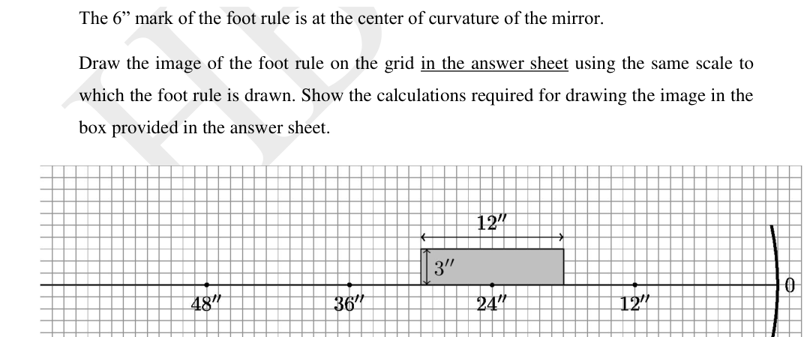
Topic: Geometric Optics Metodi: Thin Lens & Mirror Equation, Ray Tracing Competenze: Diagrammatic Reasoning Objects: Mirror Fonte: Testo (PDF) — p.22 Soluzione: Soluzioni (PDF)
- Non è vero.
Come mostrato nella figura della griglia di seguito, esiste una regola di piede di dimensioni 12” × 3 mantenuta su e sopra l’asse principale di un piccolo specchio concavo di raggio di curvatura 24”. Le distanze dal polo dello specchio lungo l’asse principale sono segnate. Il segno di 6” della regola del piede è al centro della curvatura dello specchio.
Disegnare l’immagine della regola del piede sulla griglia nella scheda di risposta utilizzando la stessa scala a cui è stata disegnata la regola del piede. Indicare i calcoli necessari per disegnare l’immagine nella casella riportata nella scheda delle risposte. Si noti che i marchi saranno dati solo se giustificati dai calcoli riportati nella casella.
Quesito 37
Topic: Geometric Optics Metodi: Thin Lens & Mirror Equation, Ray Tracing Competenze: Diagrammatic Reasoning Objects: Mirror Fonte: Testo (PDF) — p.22 Soluzione: Soluzioni (PDF)
[18 MARKS]
The experiment of the Resonance Tube is commonly performed to determine the speed of sound. The experimental setup is as follows. A hollow tube open at both ends can be suitably lowered into water inside a jar as shown in the figure. A speaker of variable frequency is held just above the top end of the tube.
Sound waves from the speaker are allowed to enter into the tube from the top. On gradually raising or lowering the tube in the water, it is observed that when a certain length is above the water level, a loud sound is audible due to resonance. The length of the tube above the water at this position is recorded as . According to the theory if is the wavelength of the sound then
where is the end correction given by ( = inner diameter of the tube).
Quesito 38
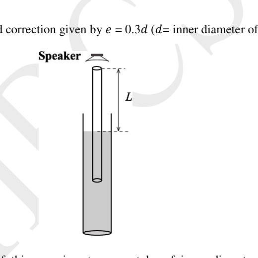
A given setup of this experiment uses a tube of inner diameter 5.0 cm. Values of recorded for different frequencies are as given below.
| No. | Frequency (Hz) | (cm) |
|---|---|---|
| 1 | 400 | 19.9 |
| 2 | 500 | 16.0 |
| 3 | 750 | 10.0 |
| 4 | 1000 | 7.5 |
| 5 | 1250 | 5.1 |
(A) Choose proper variables and to produce a suitable linear graph which can be used to determine the speed of sound. Indicate these variables in the answer sheet. [4 MARKS]
(i) Variable on the x axis (): _____ (ii) Variable on the y axis (): _____
(B) Fill the data table used to plot the graph. [2 MARKS]
(C) Use the graph sheet to produce a suitable linear graph. [9 MARKS]
(D) Determine the speed of sound using the graph plotted. [3 MARKS]
Speed of sound in air: _________________
Topic: Oscillations & Waves Metodi: Graph Linearization, Wave Equation Competenze: Graph Linearization Objects: Tube, Container Fonte: Testo (PDF) — p.23 Soluzione: Soluzioni (PDF)
[18 MARC]
L’esperimento del tubo di risonanza viene comunemente eseguito per determinare la velocità del suono. La struttura sperimentale è la seguente. Un tubo vuoto aperto alle entrambe le estremità può essere abbassato in modo appropriato nell’acqua all’interno di un vaso come mostrato nella figura. Un altoparlante a frequenza variabile è tenuto appena sopra l’estremità superiore del tubo.
Le onde sonore del altoparlante possono entrare nel tubo dall’alto. Quando si alza o abbassa gradualmente il tubo nell’acqua, si osserva che quando una certa lunghezza è al di sopra del livello dell’acqua, un suono forte è udibile a causa della risonanza. La lunghezza del tubo sopra l’acqua in questa posizione è registrata come . Secondo la teoria se è la lunghezza d’onda del suono allora
dove è la correzione finale data da ( = diametro interno del tubo).
Quesito 38
Una data configurazione di questo esperimento utilizza un tubo di diametro interno di 5,0 cm. I valori di registrati per le diverse frequenze sono riportati di seguito.
| No. | Frequency (Hz) | (cm) |
|---|---|---|
| 1 | 400 | 19.9 |
| 2 | 500 | 16.0 |
| 3 | 750 | 10.0 |
| 4 | 1000 | 7.5 |
| 5 | 1250 | 5.1 |
(A) Scegliere le variabili e adeguate per produrre un grafico lineare appropriato che può essere utilizzato per determinare la velocità del suono. Indicare queste variabili nella scheda delle risposte. 4 MARCHE
(i) Variabile sull’asse x (): _____ (ii) Variabile sull’asse y (): _____
(B) Compila la tabella di dati utilizzata per tracciare il grafico. [2 MARCHE]
(C) Utilizzare il foglio grafico per produrre un grafico lineare appropriato. [9 MARCHE]
(D) Determina la velocità del suono utilizzando il grafico tracciato. - Non è vero.
Velocità del suono nell’aria: _________________
Topic: Oscillations & Waves Metodi: Graph Linearization, Wave Equation Competenze: Graph Linearization Objects: Tube, Container Fonte: Testo (PDF) — p.23 Soluzione: Soluzioni (PDF)